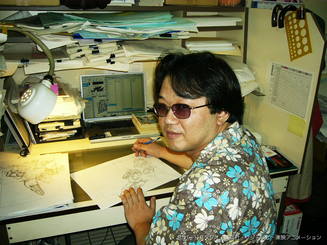

Tadayoshi Yamamuro
Tadayoshi Yamamuro nació en 1960 en Japón. Lleva trabajando desde 1984 en Toie Animation como animador clave en Dr. Slump, posteriormente Dragon Ball y así progresivamente
No fue hasta la saga de Buu de Dragon Ball Z donde tomó protagonismo con su animación estelar y diseños rompedores
Pero todo cambió al terminar Dragon Ball GT. Yamamuro se convirtió en Animador de One Piece como muchos otros, se hizo mayor y desde entonces se convirtió en el diseñador de personajes de Dragon Ball. El problema es su diseño, que se ha convertido anti-animación, es decir, no son del todo correctos para animar

Muchas sombras, piel con aspecto a plástico, detalles que hacen que la animación sea muy rígida, desproporción incluso en las hojas de diseño
En Dragon Ball Super era la luz entre la oscuridad, era el único que cuando salia, salia con calidad, aquí tenemos un ejemplo. Aunque fuera un par de escenas en toda la serie
En el vídeo que voy a adjuntar debajo explica el estilo y la historia de yamamuro mucho mejor de lo que podria hacer yo, está en inglés